Tài liệu này dành cho: Ban giám hiệu và thầy cô các trường tiểu học — từ lúc xem thử, đăng ký, đăng nhập, cho tới việc hằng ngày: đưa hồ sơ lên, nộp giáo án, điều hành, thời khóa biểu – dạy thay, quản trị tài khoản và sao lưu. Mỗi trường có một mã trường 5 chữ số và thường có một địa chỉ riêng dạng tentruong.quantrisotruonghoc.com do người phụ trách hệ thống cấp.
📷 Ảnh minh hoạ: ảnh ghi «Trường Tiểu học Minh Họa» là bản xem thử với dữ liệu mẫu; ảnh màn Quản trị chụp từ trang thật nhưng họ tên, Gmail đã được thay bằng tên giả.
- I. Hệ thống làm được gì
- II. Vào lần đầu bằng mã trường
- III. Tham quan bản xem thử
- IV. Đăng ký sử dụng chính thức
- V. Đăng nhập dùng thật
- VI. Nạp học sinh và đội ngũ
- VII. Đưa hồ sơ minh chứng lên Google Drive
- VIII. Nộp giáo án vào thư mục cá nhân
- IX. Điều hành hằng ngày
- X. Thời khóa biểu và dạy thay
- XI. Sao lưu dữ liệu hằng tháng
- XII. Quản trị hệ thống — tài khoản, phân quyền
- XIII. Dùng trên điện thoại
- XIV. Câu hỏi thường gặp
IHệ thống làm được gì
| Khối việc | Nội dung |
|---|---|
| Điều hành nhà trường | Bàn làm việc mỗi ngày của Ban giám hiệu: tổng quan hôm nay (CBGV có mặt, học sinh, an toàn từng điểm trường), báo việc, điểm danh & chấm công, đề xuất – duyệt (nghỉ phép, công tác, mua sắm… duyệt ngay trên điện thoại), giao việc, lịch công tác tuần kèm phân công trực, thông báo có xác nhận đã nhận. |
| Thời khóa biểu & dạy thay | Nạp tệp Smart Scheduler kết xuất; mọi người xem thời khóa biểu của mình, từng lớp, từng giáo viên, từng phân hiệu, thống kê tiết dạy; bố trí dạy thay theo sổ vắng với gợi ý người rảnh tiết, gửi tin Zalo, in. |
| Quản trị Hồ sơ | Kho minh chứng điện tử: bộ phận → hộp hồ sơ → đầu hồ sơ, mỗi đầu hồ sơ gắn một thư mục Google Drive; trạng thái đếm theo tệp thật trên Drive; danh mục dựng sẵn theo Điều lệ trường tiểu học 2026, nhà trường tự thêm, sửa, xoá; xuất phiếu giao việc từng hộp ra Word. |
| Hồ sơ CBGV – NV | Danh bạ đội ngũ theo chức vụ và nơi công tác; mỗi người một thư mục cá nhân trên Drive để nộp giáo án, hồ sơ cá nhân. |
| Trường chuẩn Quốc gia | Tự đánh giá 4 tiêu chuẩn, 15 tiêu chí, 2 mức theo Thông tư 57/2026; hội đồng tự đánh giá; điều kiện từng điểm trường; Biểu 1, Biểu 2, báo cáo tự đánh giá ra Word đúng Nghị định 30/2020. |
| Đảm bảo chất lượng | Chuẩn đầu ra & cam kết (chỉ tiêu theo Thông tư 27/2020), đối sánh chất lượng, điều kiện bảo đảm, tổ Đảm bảo chất lượng và hồ sơ. |
Ngoài ra có Quản lý học sinh theo năm học và từng điểm trường (kèm quy trình lên lớp), Tổ chức đảng, trường nhiều điểm trường sau sáp nhập. Mỗi trường một cơ sở dữ liệu riêng biệt; đăng nhập bằng Gmail sẵn có, việc xác thực do Google thực hiện; dữ liệu cá nhân được bảo vệ theo Luật Bảo vệ dữ liệu cá nhân năm 2025.
IIVào hệ thống lần đầu bằng mã trường
- Mở trình duyệt (máy tính hoặc điện thoại), vào quantrisotruonghoc.com.
- Ở ô Mã trường, gõ mã 5 chữ số của trường mình.
- Bấm Vào hệ thống.
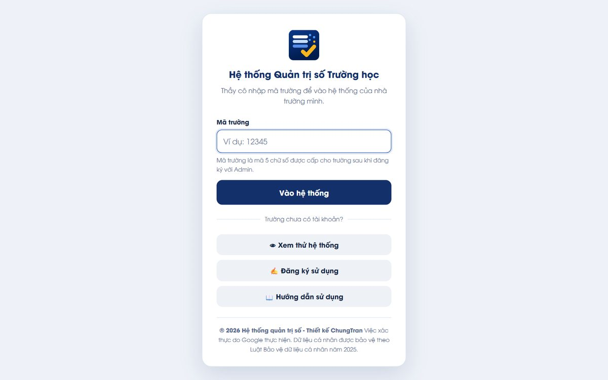
| Nếu màn hình báo | Nghĩa là gì — làm gì |
|---|---|
| «Mã trường không đúng hoặc chưa được cấp quyền sử dụng…» | Mã gõ chưa đúng — soát lại từng chữ số, hoặc liên hệ người phụ trách. |
| «Không kết nối được để kiểm tra mã trường…» | Lỗi đường mạng, không phải mã sai. Kiểm tra mạng rồi bấm lại. |
- Lần sau khỏi gõ lại: màn nhập mã có nút ↪ Vào lại [tên trường]; trường đã dùng thật thì vào thẳng địa chỉ riêng của trường.
- Muốn đổi sang trường khác: bấm ↩ Về cổng đăng nhập trên băng vàng.
- Trường sáp nhập: gõ mã của trường cũ vẫn về đúng trường mới sau sáp nhập.
IIITham quan bản xem thử — đi từng màn
Bấm 👁 Xem thử hệ thống ở cổng vào: hệ thống chạy với «Trường Tiểu học Minh Họa», một trường không có thật.
| Màn | Xem gì ở đó |
|---|---|
| Trang chủ | Lịch hôm nay, CBGV có mặt, học sinh, điểm trường an toàn, ô 🗓️ Xem TKB, việc cần xử lý gấp; các ô mở nhanh từng chức năng. |
| Điều hành | Tổng quan, báo việc, điểm danh – chấm công, đề xuất – duyệt, giao việc, lịch tuần, thời khóa biểu, thông báo (mục IX, X). |
| Quản trị Hồ sơ | Kho minh chứng theo bộ phận, ô tìm kiếm, nút 📁 mở thư mục Drive, ô Hồ sơ CBGV – NV (mục VII, VIII). |
| Quản lý học sinh | Danh sách lớp theo năm học và từng điểm trường; sĩ số, nữ, dân tộc, khuyết tật. |
| Trường chuẩn Quốc gia | 15 thẻ tiêu chí, minh chứng gắn thẳng từ kho hồ sơ; hội đồng; xuất Biểu 1, Biểu 2, báo cáo ra Word. |
| Đảm bảo chất lượng | Chuẩn đầu ra & cam kết, đối sánh chất lượng, điều kiện bảo đảm, tổ ĐBCL & hồ sơ. |
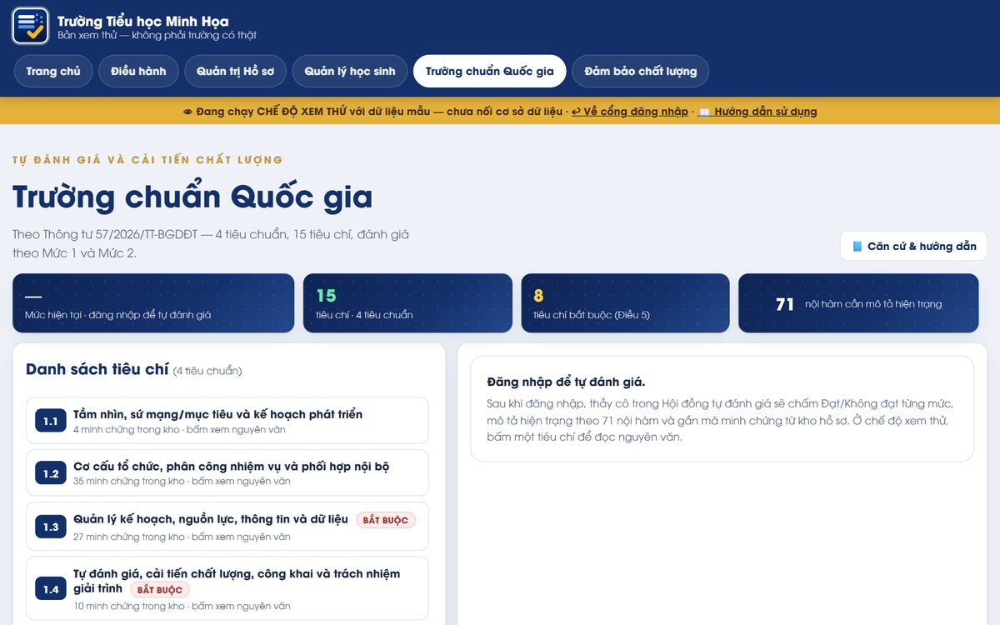
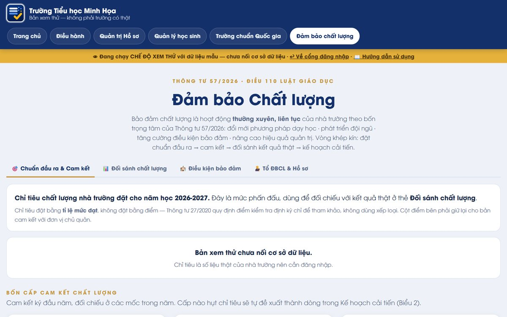
IVĐăng ký sử dụng chính thức
- Về màn nhập mã, bấm ✍ Đăng ký sử dụng.
- Điền biểu 9 ô (ô đánh dấu * là bắt buộc). Quan trọng nhất là ô Địa chỉ Gmail của người quản trị.
- Bấm 📨 Gửi đăng ký. Máy báo «✅ Đã gửi đăng ký» là người phụ trách đã nhận được.
Sau khi đăng ký: bên hệ thống dựng cơ sở dữ liệu riêng, tên miền riêng và cây thư mục hồ sơ trên Drive của trường; nhà trường điền biểu mẫu cung cấp dữ liệu — 📥 tải tại đây (Excel) — gồm thông tin trường, điểm trường và lớp, Gmail đăng nhập từng thầy cô, phân công phụ trách hộp hồ sơ, số liệu 3 năm; kèm quyết định thành lập / sáp nhập và hai tệp xuất từ CSDL ngành. Chi phí vận hành 0 đồng; nhà trường không phải đưa mật khẩu Gmail của ai.
VKhi trường đã được cấp quyền — đăng nhập dùng thật
- Vào địa chỉ riêng của trường (hoặc gõ mã trường).
- Bấm Đăng nhập bằng Google, chọn đúng Gmail đã khai với nhà trường.
| Màn hình hiện | Nghĩa là gì |
|---|---|
| Vào thẳng trang chủ, góc phải có ảnh đại diện, băng vàng biến mất | Đăng nhập thành công, số liệu là của trường. |
| «🕐 Tài khoản đang chờ duyệt» | Gmail vừa dùng không có trong danh sách của trường — đăng nhập lại bằng đúng Gmail, hoặc báo quản trị của trường thêm / sửa địa chỉ. |
| «Chưa mở đăng nhập — Trường đang trong quá trình cài đặt» | Cơ sở dữ liệu của trường đang được dựng — chờ người phụ trách báo xong. |
Bấm ảnh đại diện góc phải để xem mình đang dùng Gmail nào, vai trò gì; mở ⚙️ Quản trị hệ thống (Ban giám hiệu), 📖 Hướng dẫn sử dụng, ↩ Đăng xuất (nhớ đăng xuất trên máy dùng chung).
Việc đầu tiên của người quản trị
- Mở Quản trị → 🚀 Cài đặt: bảng liệt kê từng bước còn thiếu — bấm từng dòng để tới nơi khai.
- ⚙️ Thông tin trường: tên hiệu trưởng, điện thoại, email, khẩu hiệu, quy mô (in lên văn bản xuất Word).
- 🏫 Cơ sở & Sáp nhập: điểm trường, người phụ trách từng điểm, quyết định sáp nhập (nếu có).
- Soát ✉️ Danh sách mời — ai có tên (đúng Gmail) mới vào thẳng được.
- Mở 📋 Danh mục hồ sơ chỉnh cho khớp trường mình rồi phân công các bộ phận đưa minh chứng.
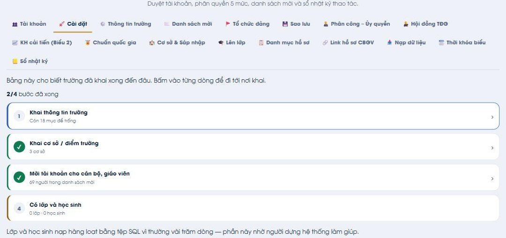
VINạp danh sách học sinh và đội ngũ vào hệ thống
Nhà trường tự nạp, không phải gửi dữ liệu đi đâu cả. Vào Quản trị → 📥 Nạp dữ liệu.
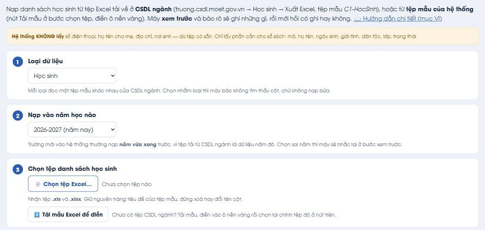
- Chuẩn bị tệp. Vào truong.csdl.moet.gov.vn → Học sinh → Xuất Excel (tệp mẫu C1-HocSinh). Giữ nguyên hàng tiêu đề. Chưa có tệp của CSDL ngành? Bấm ⬇️ Tải mẫu Excel để điền, điền các ô nền vàng rồi chọn lại chính tệp đó.
- Chọn năm học đúng năm của tệp (tệp CSDL ngành thường là dữ liệu năm vừa xong).
- Chọn tệp rồi chờ vài giây.
- Đọc bảng xem trước: thêm mới, cập nhật, đổi lớp, lớp sẽ tạo, dòng thiếu dữ liệu (kèm số hàng Excel). Chưa có gì được ghi.
- Thấy đúng thì bấm 📥 Ghi … em vào hệ thống.
| Điều cần biết | Vì sao |
|---|---|
| Hệ thống không lấy số điện thoại, họ tên cha mẹ, địa chỉ, nơi sinh | Chỉ lấy phần cần cho sổ sách — thu thập ít nhất có thể theo Luật Bảo vệ dữ liệu cá nhân năm 2025. |
| Hệ thống không xoá học sinh nào | Em có trong hệ thống mà không có trong tệp thì máy chỉ báo số lượng để kiểm lại. |
| Nạp lại nhiều lần an toàn | Ghi đè theo mã học sinh, không sinh bản trùng. |
| Ô số định danh cá nhân mặc định để trống | Chỉ tích khi thật sự cần. Nạp rồi thì chỉ quản trị đọc được. |
| Lớp mới tạo chưa gắn điểm trường | Nạp xong vào 🏫 Cơ sở & Sáp nhập phân lớp về điểm trường — trường có phân hiệu thì bắt buộc. |
| Loại dữ liệu | Tệp mẫu (nút Tải mẫu) | Dùng khi |
|---|---|---|
| Học sinh | MAU-NHAP-HOC-SINH-…xlsx — Mã lớp · Mã học sinh · Họ tên · Ngày sinh · Giới tính · Dân tộc · Khuyết tật · Trạng thái · Số định danh | Tự lập danh sách hoặc nạp bổ sung vài lớp. Có tệp C1-HocSinh thì nạp thẳng tệp đó. |
| Tuyển sinh lớp 1 | MAU-CHIA-LOP-TUYEN-SINH-…xlsx — mỗi lớp một khối «LỚP 1A» | Đã chia lớp nhưng Bộ chưa cấp mã: máy nạp mã tạm, sau đối chiếu số căn cước để đổi sang mã chính thức. |
| Đội ngũ CBGV | MAU-NHAP-CBGV-…xlsx — Họ tên · Email Google · Chức vụ · Tổ · Vai trò · Cơ sở công tác | Mở tài khoản cho cả trường một lần, hoặc bổ sung người mới. |
VIIĐưa hồ sơ minh chứng lên Google Drive
Tệp minh chứng không nằm trong hệ thống — chúng nằm trên Google Drive của chính nhà trường; hệ thống giữ đường dẫn tới từng thư mục và đếm tệp thật để biết hồ sơ nào đã có. Khi dựng trường, người phụ trách đã tạo sẵn cây thư mục đúng danh mục và gắn link vào từng đầu hồ sơ.
Hằng ngày (người phụ trách hồ sơ)
- Mở Quản trị Hồ sơ → gõ tên hoặc mã hồ sơ vào ô tìm kiếm (không dấu cũng được), hoặc bấm ô bộ phận → Mở danh mục.
- Bấm nút 📁 ở cuối dòng — thư mục Drive của đúng đầu hồ sơ ấy mở ra trong thẻ mới.
- Đưa tệp vào thư mục:
- Máy tính: kéo thả tệp vào cửa sổ Drive, hoặc ＋ Mới → Tải tệp lên.
- Điện thoại: app Google Drive → ＋ → Quét — camera chụp văn bản giấy và tự ghép thành PDF.
- Quay lại app, bấm 🔄 Kiểm tra ngay ở đầu danh mục bộ phận — máy đếm tệp thật, hồ sơ có tệp chuyển Đã có.
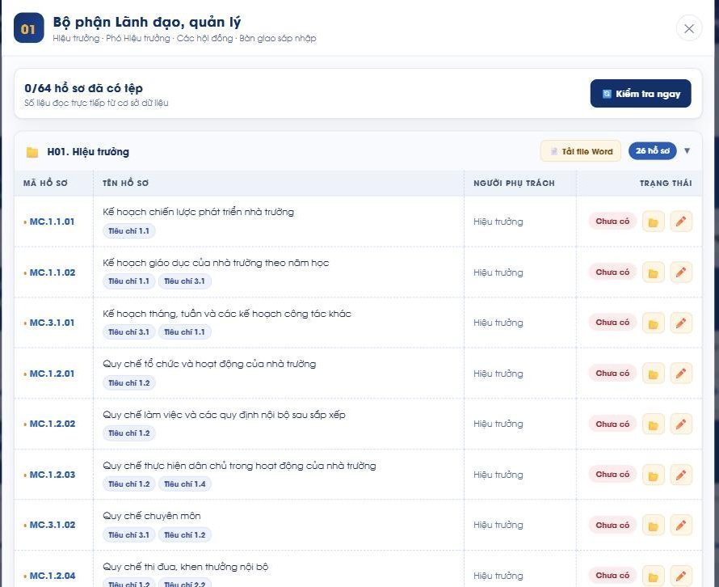
Sửa một đầu hồ sơ (nút ✏)
Đổi tên cho khớp cách gọi của trường, đổi trạng thái Đang cập nhật, ghi người phụ trách, giao quyền sửa hồ sơ cho một tài khoản (người đó tự sửa được mà không cần quyền quản trị), dán / sửa đường dẫn thư mục Drive, ghi chú nội bộ.
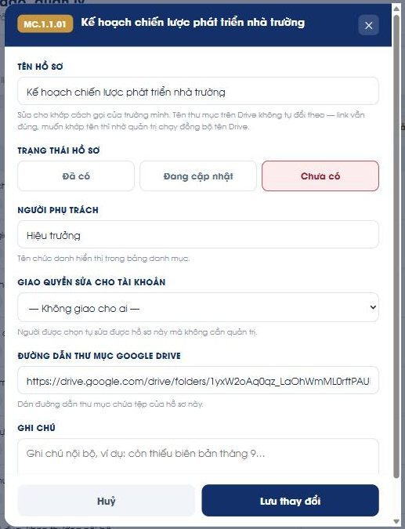
- Tải tệp bằng Gmail của chính mình vào thư mục được chia sẻ — tệp tính vào dung lượng của người tải lên. Tài khoản Google của trường mà đầy dung lượng thì chính tài khoản trường không tải được tệp mới, nhưng thầy cô vẫn tải được bình thường.
- Đặt tên tệp có năm học và nội dung — 2026-2027 Ke hoach giao duc.pdf dễ tìm hơn Scan0012.pdf.
- Quét bằng nút Quét của app Drive thay vì chụp ảnh thường: chữ phẳng, nét, nhiều trang gộp một PDF.
- Tệp chứa dữ liệu cá nhân thì không để chế độ công khai toàn mạng — chỉ chia sẻ trong trường.
- Nút 📁 báo «chưa được gán thư mục trên Drive» thì nhờ quản trị dán đường dẫn trong khung ✏ — không phải lỗi.
VIIINộp giáo án vào thư mục cá nhân
Mỗi thầy cô có một thư mục riêng trên Drive của trường (trong thư mục «Hồ sơ giáo viên»), đã chia sẻ quyền sửa cho đúng Gmail của người đó; Ban giám hiệu xem được mọi thư mục. Hai đầu hồ sơ kế hoạch bài dạy trong kho hồ sơ bấm vào sẽ dẫn thẳng sang trang đội ngũ — không phải nộp giáo án hai nơi.
- Bấm Quản trị Hồ sơ → ô Hồ sơ CBGV – NV → Xem đội ngũ.
- Mở nhóm của mình: Ban giám hiệu · Giáo viên · Nhân viên. Trường nhiều điểm trường: ô 📍 Chọn nơi công tác để lọc.
- Bấm nút 📁 ở góc thẻ có tên mình → thư mục cá nhân mở ra → tải giáo án lên (như mục VII). Nên chia thư mục con theo tuần hoặc môn.
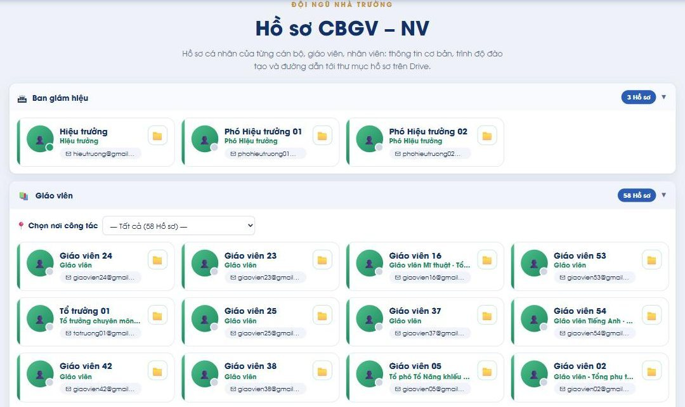
IXĐiều hành hằng ngày
Màn Điều hành là bàn làm việc của Ban giám hiệu và là nơi thầy cô gửi đề xuất, nhận việc, nhận thông báo. Góc phải có Sáng Chiều để chuyển buổi.
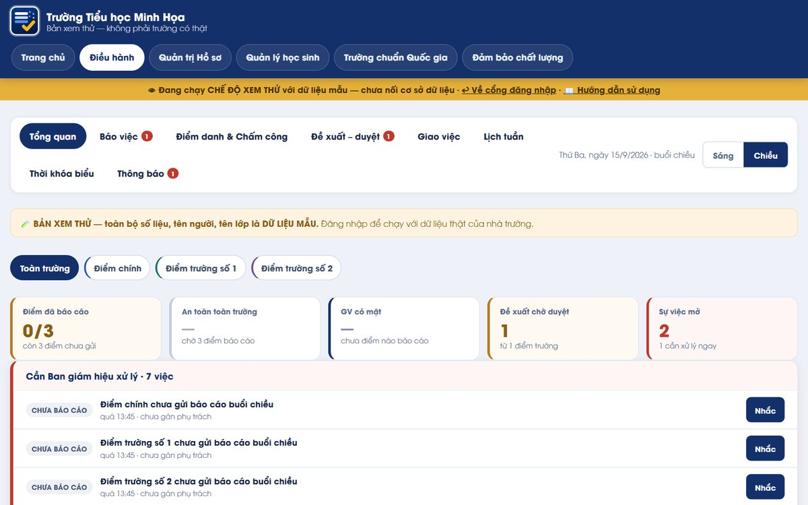
| Thẻ | Làm gì |
|---|---|
| Báo việc | Báo nhanh sự việc phát sinh để Ban giám hiệu nắm và xử lý. |
| Điểm danh & Chấm công | Người phụ trách từng điểm trường báo đầu buổi: ✓ Hôm nay không ai vắng hoặc Có người vắng. Bảng công tháng cộng thẳng từ sổ vắng, không ai nhập lại; cuối tháng 🔒 Chốt bảng công, 📄 Xuất Word (A4 ngang). |
| Đề xuất – duyệt | Thầy cô gửi: Nghỉ phép · Nghỉ ốm · Đi công tác · Việc riêng · Mua sắm / sửa chữa · Khác. Ban giám hiệu ✓ Duyệt hoặc ✗ Trao đổi lại. Đơn nghỉ đã duyệt tự vào sổ vắng — dùng luôn cho chấm công và dạy thay. |
| Giao việc | + Giao việc kèm hạn; người nhận xem ở Việc của tôi. Có thể lưu mẫu việc lặp lại. |
| Lịch tuần | ＋ Thêm việc, 🧭 Phân trực, ✎ Trọng tâm tuần, 📄 Xuất Word để in ký, niêm yết; chuyển tuần trước / tuần sau. |
| Thời khóa biểu | Xem thời khóa biểu, bố trí dạy thay (mục X). |
| Thông báo | 📢 Gửi thông báo; người nhận bấm ✓ Tôi đã nhận — người gửi biết ai chưa đọc. |
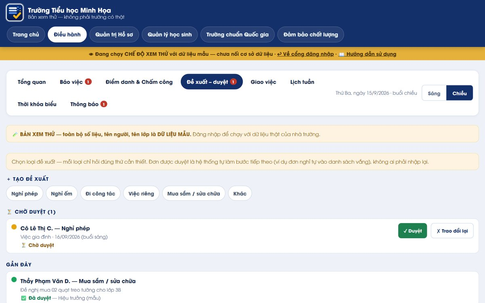
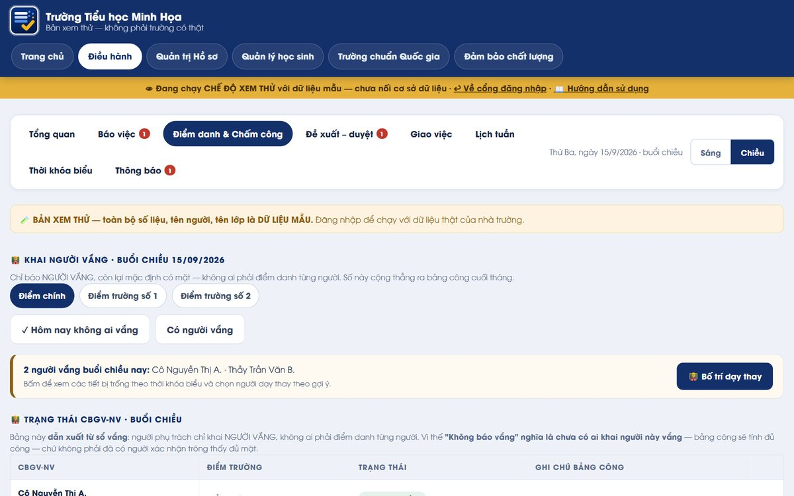
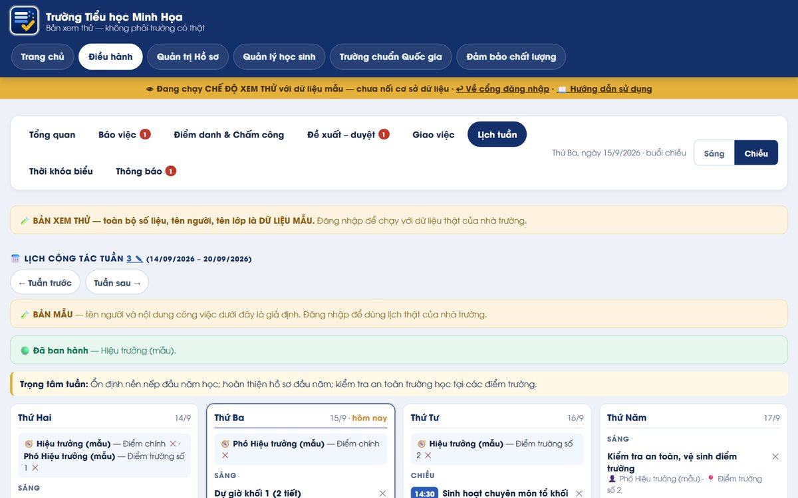
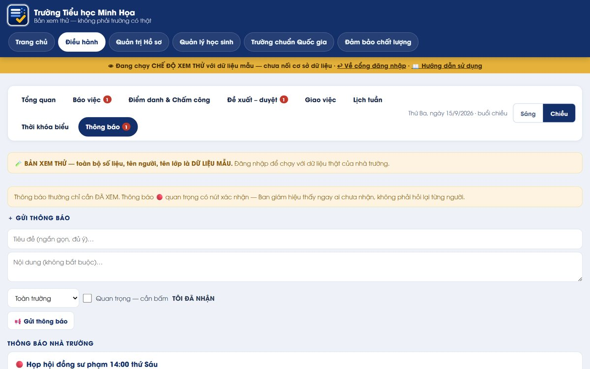
XThời khóa biểu và dạy thay
Thời khóa biểu xếp trong Smart Scheduler, rồi tải tệp kết xuất lên hệ thống để mọi người xem. Hệ thống không sửa tay từng tiết — muốn đổi lịch thì sửa trong Smart Scheduler và nạp lại, để thời khóa biểu chỉ có một nguồn.
Nạp thời khóa biểu (Ban giám hiệu)
- Trong Smart Scheduler: Hệ thống › Chuyển đổi dữ liệu sang Excel. Tệp gồm 3 trang PCGD · TKB_LOP_SC · TKB_GV_SC (tệp đủ 10 trang cũng đọc được). Trường có phân hiệu: mỗi phân hiệu một tệp.
- Quản trị → 🗓️ Thời khóa biểu → Chọn tệp Excel….
- Máy xem trước, ghép tên gọi («Cô Lan») với tài khoản; soát rồi ghi, chọn ngày áp dụng. Các bản đã nạp được giữ lại theo ngày.
- Trường không dùng Smart Scheduler: ⬇️ Tải mẫu 3 trang, điền ô vàng (mỗi ô tiết ghi Môn - Cô X).
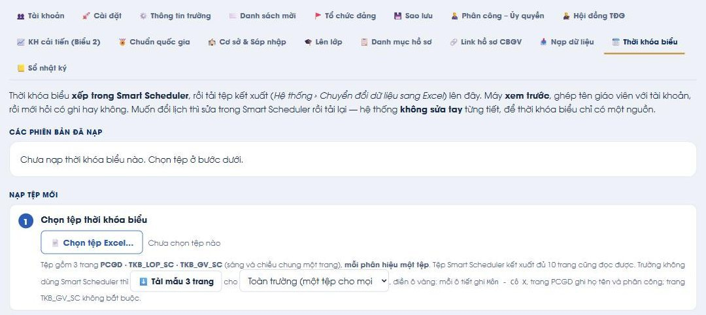
Xem thời khóa biểu (mọi người)
Điều hành → Thời khóa biểu hoặc ô Xem TKB ở trang chủ: TKB của tôi · Phân hiệu · Từng lớp · Từng giáo viên · Thống kê tiết dạy · Dạy thay; lọc Cả ngày / Sáng / Chiều; 🖨️ In ⬇️ Excel.
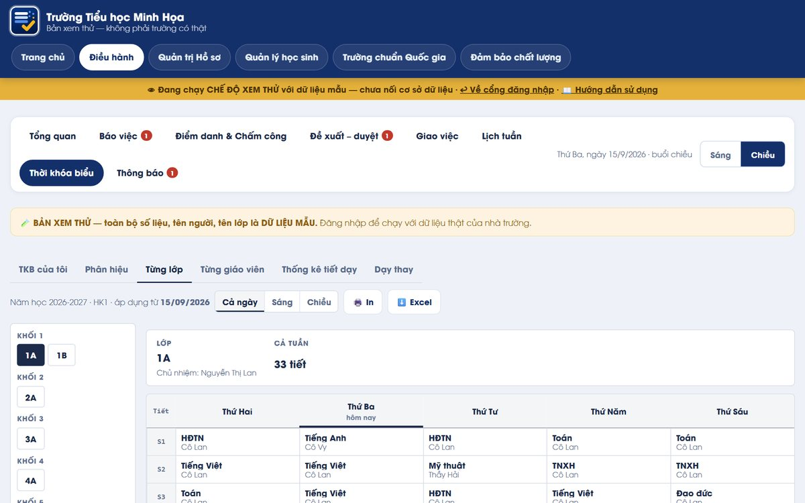
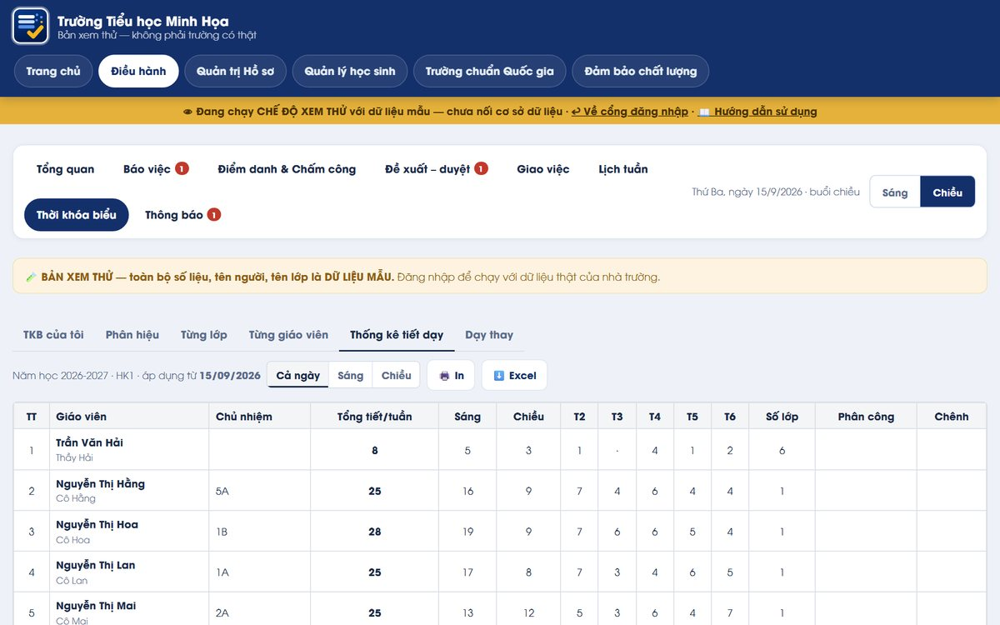
Bố trí dạy thay (Ban giám hiệu)
- Người vắng lấy từ sổ vắng — gồm điểm danh báo vắng và đơn nghỉ đã duyệt.
- Thời khóa biểu → Dạy thay → Bố trí theo ngày: chọn ngày, máy liệt kê người vắng · tiết cần thay · tiết chưa bố trí, kèm gợi ý người rảnh đúng tiết đó.
- Chọn người dạy thay từng tiết; gửi tin Zalo soạn sẵn hoặc in phân công.
- Giáo viên xem Tiết dạy thay của tôi; trang chủ nhắc. Danh sách dạy thay xem lại các tiết đã bố trí.
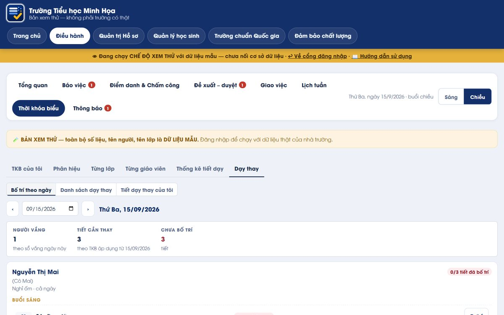
XISao lưu dữ liệu hằng tháng
Dữ liệu nằm trên máy chủ, nhưng bản sao lưu do chính nhà trường giữ mới là bảo hiểm cuối cùng. Cuối mỗi tháng, người quản trị vào Quản trị → 💾 Sao lưu:
- Bấm 💾 Tải bản sao lưu — máy gói toàn bộ dữ liệu thành một tệp, mất khoảng nửa phút.
- Cất vào Google Drive của trường (thư mục «Sao lưu hệ thống»), giữ ít nhất ba bản gần nhất.
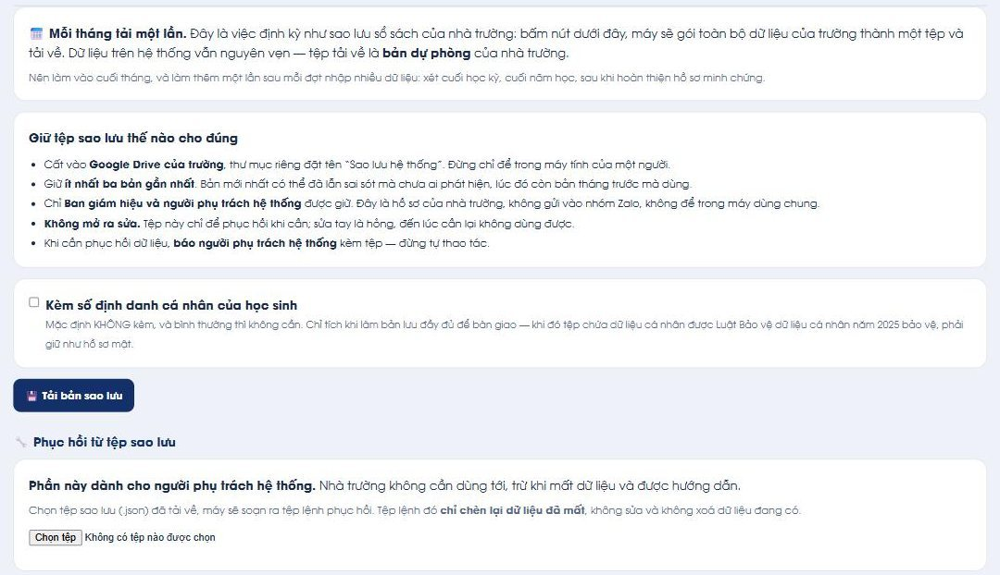
- Nên do Hiệu trưởng hoặc người phụ trách hệ thống làm — tài khoản không đủ quyền thì máy chặn lại và báo rõ, không tải về tệp thiếu ruột.
- Mặc định tệp không kèm số định danh cá nhân của học sinh; chọn kèm thì giữ tệp như hồ sơ mật.
- Cần phục hồi thì đưa tệp cho người phụ trách hệ thống — không tự nạp lại được bằng kéo thả, để không ai lỡ tay ghi đè.
XIIQuản trị hệ thống — tài khoản và phân quyền
Chỉ vai Quản trị hệ thống hoặc Ban giám hiệu mới vào được (ảnh đại diện góc phải → ⚙️ Quản trị hệ thống). Hàng rào đặt ở máy chủ, không chỉ giấu trên màn hình. Mọi việc dưới đây làm bằng chuột và bàn phím, trên điện thoại cũng được.
| Thẻ trong màn Quản trị | Dùng để |
|---|---|
| 👥 Tài khoản | Người đã đăng nhập ít nhất một lần: duyệt người chờ, đổi vai trò, khoá / mở khoá, xoá. |
| 🚀 Cài đặt · ⚙️ Thông tin trường | Các bước còn thiếu; tên hiệu trưởng, liên hệ, khẩu hiệu, quy mô. |
| ✉️ Danh sách mời | Danh sách được phép vào: email, họ tên, chức vụ, tổ, vai trò, nơi công tác, link Drive; dán cả bảng từ Excel. |
| 🚩 Tổ chức đảng | Chi bộ / đảng bộ và các chi bộ trực thuộc; hồ sơ đảng. |
| 🧑💼 Phân công – Ủy quyền · 🧑⚖️ Hội đồng TĐG · 📈 KH cải tiến (Biểu 2) · 🏅 Chuẩn quốc gia | Phân công phụ trách, hội đồng tự đánh giá, kế hoạch cải tiến, bằng công nhận. |
| 🏫 Cơ sở & Sáp nhập | Quyết định sáp nhập, điểm trường và người phụ trách, lớp thuộc điểm nào, trường tiền thân; máy tính mốc đánh giá lại chuẩn quốc gia. |
| 🎓 Lên lớp · 📋 Danh mục hồ sơ | Chuyển cả trường sang năm học mới; thêm / sửa / xoá đầu hồ sơ. |
| 🔗 Link hồ sơ CBGV · 📥 Nạp dữ liệu · 🗓️ Thời khóa biểu | Thư mục cá nhân từng người (dán hàng loạt); nạp học sinh, đội ngũ (mục VI); nạp thời khóa biểu (mục X). |
| 💾 Sao lưu · 📒 Sổ nhật ký | Tải bản sao lưu hằng tháng (mục XI); tra ai làm gì, lúc nào. |
Điều quan trọng nhất: hai bảng khác nhau
Danh sách mời là tấm thiệp mời; Tài khoản là người đã bước vào cửa. Thu lại tấm thiệp không đuổi được người đã ngồi trong phòng — muốn cắt hẳn một người thì phải làm cả hai bên.
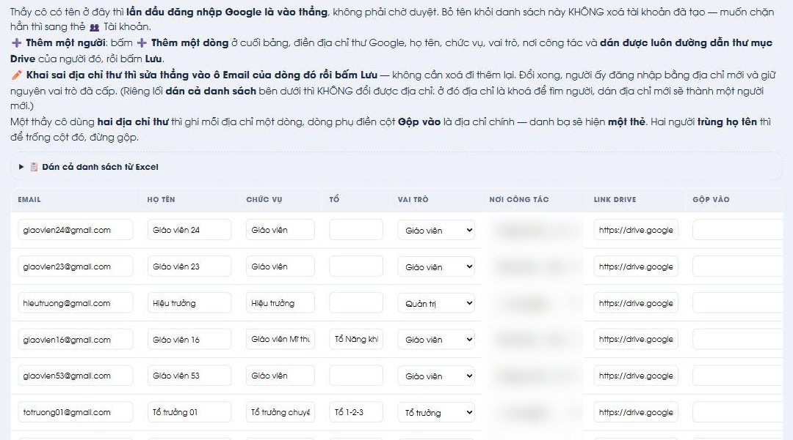
| ✉️ Danh sách mời | 👥 Tài khoản | |
|---|---|---|
| Là gì | Danh sách được phép vào. Nhà trường tự khai. | Những người đã thật sự đăng nhập ít nhất một lần. |
| Ai tạo ra dòng | Quản trị viên gõ vào (hoặc nạp từ tệp). | Máy tự tạo khi người đó đăng nhập Google lần đầu. |
| Sửa được gì | Email, họ tên, chức vụ, tổ, vai trò, nơi công tác, link Drive, cột Gộp vào. | Chỉ vai trò và trạng thái. |
| Vai trò có tác dụng với | Người chưa đăng nhập lần nào. | Người đã đăng nhập — nâng / hạ quyền sửa ở đây. |
| Xoá dòng nghĩa là | Không được mời nữa, nhưng tài khoản đã tạo vẫn còn. | Xoá hẳn tài khoản khỏi hệ thống. |
Người có tên trong Danh sách mời thì lần đầu đăng nhập là vào thẳng, đúng vai trò. Người không có tên mà vẫn đăng nhập được thì rơi vào 🟡 Chờ duyệt, chưa xem được gì cho tới khi quản trị viên đổi sang 🟢 Hoạt động.
Tờ tra nhanh — tình huống nào làm ở đâu
| Tình huống | Làm gì |
|---|---|
| Trường có thầy cô mới về | ✉️ Danh sách mời → ➕ Thêm một dòng → điền Gmail, họ tên, chức vụ, vai trò, nơi công tác, link Drive → Lưu → báo họ đăng nhập bằng đúng Gmail vừa ghi. |
| Đầu năm học, thay cả danh sách | 📥 Nạp dữ liệu → loại Đội ngũ CBGV, hoặc ✉️ → 📋 Dán cả danh sách từ Excel. |
| Khai sai Gmail — chưa từng đăng nhập | ✉️ sửa thẳng ô Email của dòng đó → Lưu. Xong. |
| Đổi Gmail — đã từng đăng nhập | ✉️ sửa Email → họ đăng nhập lại bằng địa chỉ mới (giữ nguyên vai trò) → 👥 xoá dòng địa chỉ cũ. |
| Nghỉ thai sản, đi học | 👥 Tài khoản → 🔴 Khoá → Lưu. Khoá lùi lại được — gần như luôn chọn Khoá thay vì Xoá. |
| Chuyển trường hẳn, nghỉ hưu | Làm cả hai bên: ✉️ xoá dòng mời và 👥 xoá tài khoản (Quản trị / BGH thì hạ vai trò trước). |
| Giao thêm quyền quản trị | 👥 Tài khoản → Vai trò = Quản trị hệ thống → Lưu (chưa đăng nhập thì sửa ở ✉️). |
| Một người dùng hai Gmail | Hai dòng trong ✉️, dòng phụ điền Gộp vào = địa chỉ chính. Không dùng cho hai người trùng họ tên. |
Năm vai trò
| Vai trò | Làm được gì |
|---|---|
| Quản trị hệ thống | Toàn quyền, kể cả màn Quản trị. |
| Ban giám hiệu | Như Quản trị ở hầu hết việc điều hành và duyệt; vai của Hiệu trưởng và Phó Hiệu trưởng. |
| Tổ trưởng chuyên môn | Quản lý phần việc của tổ chuyên môn. |
| Giáo viên | Xem và làm phần việc được giao; nộp giáo án; gửi đề xuất. Quyền hẹp nhất — chọn khi còn phân vân. |
| Nhân viên | Kế toán, văn thư, thư viện – thiết bị, y tế học đường. |
- Luôn có ít nhất hai người vai Quản trị — thường là Hiệu trưởng và một Phó Hiệu trưởng.
- Phân vân thì chọn quyền hẹp hơn. Nâng quyền bao giờ cũng dễ hơn thu lại quyền đã trót cấp.
Sự cố thường gặp
| Hiện tượng | Nguyên nhân và cách chữa |
|---|---|
| «Đăng nhập rồi mà không thấy gì» | Đang 🟡 Chờ duyệt — Gmail đăng nhập không trùng Gmail trong danh sách mời. Xem địa chỉ thật ở 👥 Tài khoản rồi sửa cho khớp. |
| Đã xoá mà người đó vẫn vào được | Mới xoá một bên — xoá ở cả ✉️ và 👥. |
| Đổi vai trò rồi mà vẫn quyền cũ | Người đã đăng nhập thì vai trò thật ở 👥 Tài khoản. Sửa xong bảo họ tải lại trang. |
| Nút hiện «Lỗi!» khi bấm Lưu | Không đủ quyền Quản trị, hoặc mất mạng. Máy không bao giờ báo «Đã lưu ✓» khi chưa lưu được. |
| Hồ sơ CBGV – NV thiếu người | Hai người trùng họ tên bị khai gộp nhầm ở cột Gộp vào — xoá nội dung ô đó ở cả hai dòng rồi Lưu. |
| Sửa xong mà màn hình vẫn như cũ | Trình duyệt giữ bản cũ: máy tính Ctrl + F5; điện thoại đóng hẳn thẻ rồi mở lại. |
XIIIDùng trên điện thoại
Hệ thống chạy trên trình duyệt điện thoại, không phải cài ứng dụng. Thanh chức năng thu vào nút ☰; bảng nhiều cột thì vuốt ngang trong lòng bảng.
Đưa ra màn hình chính để lần sau một chạm là vào:
- Android (Chrome): ⋮ → Thêm vào màn hình chính.
- iPhone (Safari): nút chia sẻ ⬆ → Thêm vào MH chính.
Việc hợp với điện thoại: duyệt đề xuất, báo điểm danh đầu buổi, xem thời khóa biểu, nhận thông báo, quét văn bản bằng app Drive để đưa minh chứng. Nhập liệu nhiều (danh mục, danh sách mời) thì máy tính thuận tay hơn.
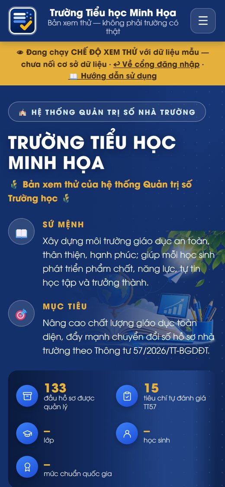
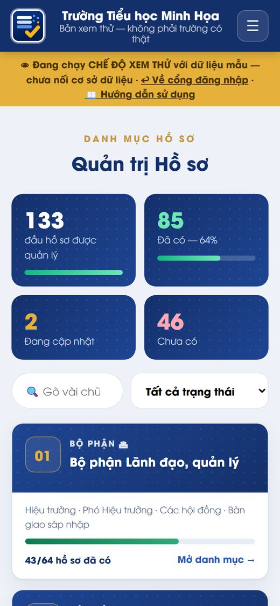
XIVCâu hỏi thường gặp
| Câu hỏi | Trả lời |
|---|---|
| Quên mật khẩu thì sao? | Hệ thống không có mật khẩu riêng — đăng nhập bằng Google. Quên mật khẩu Gmail thì khôi phục ở Google. |
| Không nhớ mã trường thì hỏi ai? | Người phụ trách hệ thống, hoặc người của trường mình từng đăng ký. |
| Tên trường hiện ra hơi khác tên thật? | Tên lấy theo danh bạ, có thể chưa kịp cập nhật sau sắp xếp. Khi dùng thật, tên lấy theo khai báo của nhà trường. |
| Máy cứ tự mở một trường không phải trường mình? | Máy từng vào trường ấy nên ghi nhớ — bấm ↩ Về cổng đăng nhập rồi gõ mã trường mình. |
| Dữ liệu trường có ai khác xem được không? | Không. Mỗi trường một cơ sở dữ liệu riêng, quyền đặt đến từng Gmail; tệp minh chứng nằm trên Drive của chính nhà trường. |
| Hai người cùng sửa một bảng có đè nhau không? | Không — hệ thống chỉ ghi đúng ô vừa sửa. |
| Trang báo không kết nối được cơ sở dữ liệu? | Hệ thống đang tạm nghỉ (hiếm gặp) — báo người phụ trách; dữ liệu không mất. |
| Xem thử có làm hỏng gì, có mất phí không? | Không và không. Bản xem thử chỉ chạy dữ liệu mẫu; hệ thống vận hành chi phí 0 đồng. |